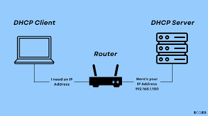
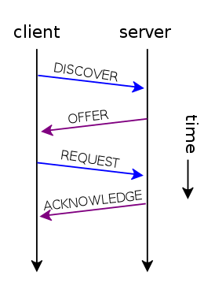

Ez egy hálózati menedzsment protokoll, amely az alkalmazás rétegben található. A DHCP segítségével az Internet Protokoll IP-címet dinamikusan hozzá lehet rendelni bármilyen eszközhöz vagy csomóponthoz, hogy ezek az IP-vel kommunikálhassanak. A hálózati rendszergazdák feladata sok IP-cím manuális megadása a hálózat összes eszközéhez. A DHCP-ben azonban ezt a feladatot automatizálják és központilag kezelik, nem pedig kézzel. A kis helyi hálózatok és a nagyvállalati hálózatok egyaránt megvalósítják a DHCP-t. A DHCP alapvető célja egy egyedi IP-cím hozzárendelése a hostokhoz.
Amikor kiszolgálóként működik, a DHCP-kiszolgálót egyedi IP-címek hozzárendelésére használják a hálózat egyéb információinak automatikus konfigurálása mellett. Kisvállalkozásokban vagy otthonokban a DHCP szerver nem más, mint az útválasztó. Nagy hálózatokban azonban a DHCP-kiszolgáló egyetlen számítógép lehet.
